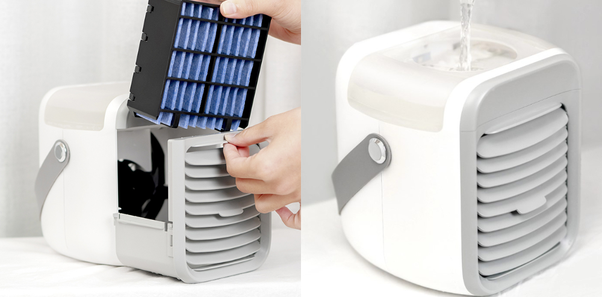
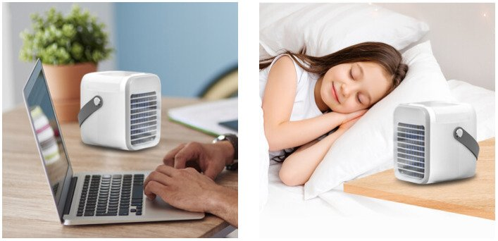
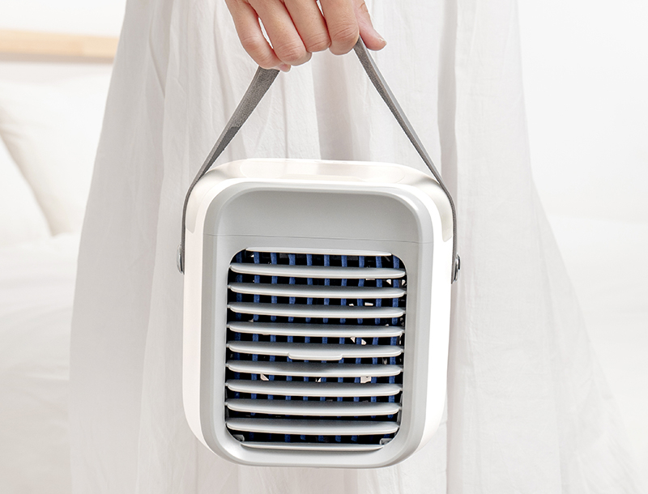
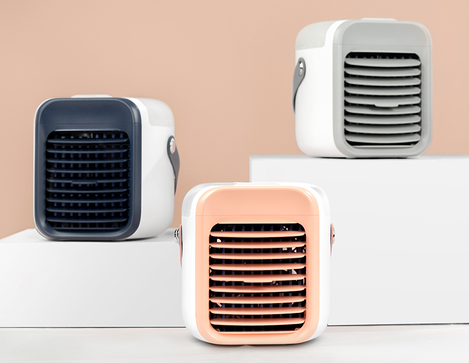

Finally, Real Relief from the Scorching Summer Heat & Humidity—Even if Nothing Else has Worked!

by Technology
See why this new portable air cooler is gaining popularity quickly in and selling out everywhere....
Summer is great, but long, hot days can quickly become unbearable, especially if you are at work or need to study.
Even when the window is open, the sun can transform your office or bedroom into an oven.
Does this sound like a common problem?
We all know how uncomfortable the summer heat can get. We also know how expensive it can be to run up a large a/c bill in the house.
Suffering in the summer heat is not your only choice. There is now an excellent and affordable alternative...
What is it?
Meet the Blaux Portable AC.
The German engineering team behind the company Blaux are experts in cooling systems. They wanted to make a high-quality air cooler that everyone could afford. It's designed to be easy to use, with no tubes or anything else that needs a complicated installation.
Blaux Portable AC is a powerful, light, and compact personal air cooler that you can take anywhere. It cools, humidifies, and purifies the warm air in your room to make it a breeze of fresh, healthy, and clean air!
Thanks to its compact and portable design, it is ideal for use in the office, at home, or at a friend's house. It provides you with a better, colder environment no matter where you are.
How Does It Work?
The Blaux Portable AC is very easy to set up and operate. In less than 60 seconds, you will enjoy all the benefits of an air-conditioned room.
All you need to do is fill the water tank with water and press the start button.
It's designed with three adjustable wind speed modes (low, medium, and high). These 3 options adapt to all your cooling preferences. It decreases the room temperature up to 10 degrees!
Not only does Blaux Portable AC make the air around you as cold as you like, but it also cleans it.
Blaux Portable AC cools, humidifies and cleans the air in any room for up to eight hours with a single filling.
One of the best things about the Blaux Portable AC is that it is extremely quiet, in fact, you will barely hear it. That's a big advantage when you’re working, sleeping, or using it at social events.
Cutting Edge Features Of Blaux Portable AC
✅ 3-Speed Fan -The fan can adjust to 3 different speeds to meet all needs. Try it for sleeping, working, or playing sports!
✅ LARGE Tank -The water tank is sufficient for up to 8 hours.
✅ Adjustable Blade -The air outlets can be adjusted. Move it vertically to control the air direction.
✅ Multi-Color -Seven different mood light color options are available.
✅ Affordable Price -Save more than $500 in air conditioning systems.
✅ Compact & Portable -Take it wherever you want.
✅ Ecologically Low Consumption -Take care of the environment!
✅ Very Quiet -Use it any time of the day.
Questions And Answers About Blaux Portable AC
Q: Does Blaux Portable AC need batteries?
No, the Blaux Portable AC comes with a rechargeable 200mAhbattery that allows 10 hours of use per charge. Plus, easy USB-C charging (USB cable provided) allows you to stay powered up at all times.
Q: How much can I use it per day?
It's safe to use all day long and recommended for work, study, or sleeping.
Q: Is there any professional assistance required?
To use Blaux Portable AC no professional help is required. It's as easy as filling the water tank with water and pushing the start button!
What Makes Blaux Portable Better Than Traditional Air Coolers?
Other air conditioners take up a lot of space, and running them throughout the day can be very expensive.
This device is a cost-effective, portable, and efficient alternative to other air-conditioning devices. It's also an efficient substitute for an electric fan.
Be prepared for the heatwaves this summer. Put an end to dripping with sweat in your kitchen, bedroom, or office. Get this unique product now and enjoy a cool and relaxing summer.
How Much Does It Cost?
If you look at the features of the Blaux Portable AC it wouldn’t be surprising to see a price tag of up to $300. Which would still be lower than most of its competitors (some cost over $500).
That’s why we were stunned to learn the company sells this air cooler for just $89 (thanks to a 50% promo ending soon).
Click here to claim a discounted Blaux Portable AC (if it's still available) >>
One thing is for certain, once you use this device, you'll never want to go back to life without it.
Conclusion: Is It Worth It?
Absolutely yes!
With big heatwaves around the corner, Blaux Portable AC will keep you cool and comfortable.
Other AC systems use a lot of energy to cool an entire house or building, which is very expensive! This personal air cooler cools where you need it most while using the size and power consumption of a small fan.
At the moment, you can get Blaux Portable AC with a 50% discount. It's an amazing deal and we're sure this won't last long...
Time to finally enjoy summer without sweating and stressing under the pounding heat!
How To Get Your Very Own Blaux Portable AC?
Get your Blaux Portable AC from the official website here.
As of June 3, 2020* – Ever since the Blaux Portable AC was on major international media, an incredible amount of buzz has been generated. Due to its popularity and positive reviews, the company is so confident in their product that they are now offering a one-time, first‑time‑buyer 50% discount.